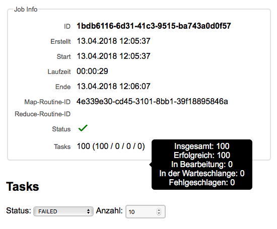

Programme
Der DEF Web-Manager dient für das Monitoring der laufenden und abgeschlossenen Programme, die im DEF bearbeitet werden bzw. wurden. Es wird eine Übersicht über alle Programme geboten, unterteilt in laufende und abgeschlossene Programme, sowie eine Detail-Ansicht der einzelnen Programme, Jobs und Tasks.
Zusätzlich zu deren Überwachung wird die Möglichkeit geboten, laufende Programme, Jobs und Tasks abzubrechen. Weiters können abgeschlossene Programme über den DEF Web-Manager gelöscht werden.
Inhalt:
- Programme-Übersicht
- Programm-Details
- Job-Details
- Task-Details
Die Startseite des DEF Web-Managers stellt die Programme-Übersicht dar. Hier werden die aktuell laufenden sowie die abgeschlossenen Programme, sofern diese nicht bereits gelöscht wurden, dargestellt. Zu den laufenden Programmen zählen sowohl die Programme, die gerade bearbeitet werden, als auch die, die sich in der Wartschlange für die Bearbeitung befinden.
In der folgenden Grafik ist die Programme-Übersicht zu sehen, in der sich weder laufende noch abgeschlossenen Programme befinden.

Wird über einen DEF-Client ein neues Programm auf dem DEF gestartet, ist dieses in der Programme-Übersicht zu sehen.

Die Tabellen für die laufenden und abgeschlossenen Programme enthalten folgende Informationen über das jeweilige Programm:
- ID
- Name
- Start-Zeitpunkt
- Laufzeit
- Jobs
- User
- Status
Bei der ID handelt es sich um eine sogenannte UUID, welche 32 Zeichen lang ist und vom DEF automatisch generiert wird. Sie dient als eindeutige Identifkationsnummer des Programms innerhalb des DEFs. Da die gesamte ID für die Benutzer in der Programme-Übersicht meist nicht relevant sein wird, wird der Übersichtlichkeit halber nur ein Teil der ID dargestellt. Wird doch die ganze ID benötigt, ist diese in der Detail-Ansicht des Programms zu finden oder beim Platzieren der Maus über dem ID-Feld.

Der Name des Programms stellt eine optionale Information dar, die vom Benutzer selbstständig vergeben wird. Er dient als einfacheres Identifikationsmerkmal für die Benutzer.
Der Start-Zeitpunkt eines Programmes wird als Datum inklusive Uhrzeit im Format "dd.MM.yyyy hh:mm:ss" angegeben. Ein Programm wird gestartet, sobald es durch einen Client erzeugt wird.
Die Laufzeit eines Programms wird im Format "hh:mm:ss" angegeben und stellt bei den laufenden Programme die Zeit vom Start des Programms bis zum aktuellen Zeitpunkt dar und bei den abgeschlossenen Programmen die Zeit vom Start des Programms bis die letzte Berechnung erledigt wurde.
Die Darstellung der Job-Informationen ist ebenfalls unterschiedlich bei den laufenden und abgeschlossenen Programmen, so wird bei den laufenden Programmen dargestellt, wie viele der vorhandenen Jobs bereits abgearbeitet wurden, im Format [Anzahl der abgeschlossenen Jobs] / [Gesamtanzahl der Jobs]. Bei den abgeschlossenen Jobs wird angezeigt, wie viele Jobs das Programm beinhaltet. Bei den laufenden Programmen wird dies zudem mit Hilfe eines Tooltips übersichtlicher dargestellt.

Beim User wird der Username des Benutzers dargestellt, der das Programm über den DEF-Client gestartet hat. In den dargestellten Grafiken sind die User-Informationen leer, da der DEF Web-Manager sowie das DEF selbst aktuell noch kein umfangreiches Benutzer-Management bereitstellt.
Beim Status des Programms wird durch Icons dargestellt, in welchem Ausführungsschritt sich das Programm aktuell befindet. Folgende Status sind vorhanden:
| Icon |
Status |
|
In der Warteschlange |
|
In Bearbeitung |
 |
Erfolgreich bearbeitet |
 |
Fehler aufgetreten |
Zusätzlich zum Icon wird beim Platzieren der Maus über dem Status-Icon der Status in Worten dargestellt.

Neben der Programme-Übersicht gibt es zusätzlich eine Detail-Ansicht jedes Programms. Diese kann entweder durch Doppelklick auf den Tabellen-Eintrag des jeweiligen Programms oder durch einfaches Klicken auf das Info-Icon in der letzten Tabellenspalte erreicht werden.

Ist ein Programm abgeschlossen, entweder weil die Berechnungen beendet sind oder weil ein Fehler aufgetreten ist, wird es in den abgeschlossenen Programmen dargestellt, solange es noch nicht gelöscht wurde.

Durch Doppelklick auf den Tabellen-Eintrag oder einfaches Klicken auf das Details-Icon kann zur Detail-Ansicht des entsprechenden Programms gewechselt werden.
In den Programm-Details werden zusätzliche Informationen zum jeweiligen Programm dargestellt. Diese umfassen die Programm-Infos, die Darstellung des Fortschritts der Berechnungen und die Auflistung der Jobs, die zum entsprechenden Programm gehören.
Die Programm-Infos enthalten die folgenden Punkte:
- ID
- Name
- Start-Zeitpunkt
- End-Zeitpunkt (wenn es sich um ein abgeschlossenes Programm handelt)
- Laufzeit
- Beschreibung
- Status
- Jobs
Bei der ID handelt es sich, wie bei der Programme-Übersicht bereits beschrieben, um eine 32 Zeichen lange Identifikationsnummer, die das DEF für die Identifikation des Programms innerhalb des Systems verwendet.
Standardmäßig hat ein Programm keinen Namen. Um es den Benutzern jedoch zu erleichtern, bestimmte Programme wiederzufinden und zu identifizieren, kann individuell ein Name für jedes Programm vergeben werden. Durch Klicken auf den Ändern-Button hinter dem Namensfeld öffnet sich ein Textfeld, in das der Programm-Name eingetippt werden kann.
Befindet man sich im Editier-Modus erscheinen hinter dem Textfeld zwei neue Buttons. Einer, um die Änderungen am Namen zu speichern, und einer, um die Änderungen zu verwerfen und den Editier-Vorgang abzubrechen.

Der Start-Zeitpunkt eines Programmes wird im Format "dd.MM.yyyy hh:mm:ss" dargestellt und entspricht dem Zeitpunkt, zu dem das Programm über einen DEF-Client erstellt wurde.
Handelt es sich um ein bereits abgeschlossenes Programm, wird zusätzlich der End-Zeitpunkt, welcher das Ende der letzten Berechnung kennzeichnet, im Format "dd.MM.yyyy hh:mm:ss" dargestellt.
Die Laufzeit eines Programmes stellt bei laufenden Programmen die Zeit vom Start des Programmes bis zum aktuellen Zeitpunkt dar. Bei abgeschlossenen Programmen handelt es sich dabei um die Zeit zwischen dem Start- und Endzeitpunkt des Programms.
Die Beschreibung eines Programmes, die rein für die einfachere Identifizierung der Programme und Programm-Inhalte durch die Benutzer dient, kann ebenfalls individuell angepasst werden. Für den Änderungsvorgang gilt dasselbe wie für die Namens-Änderung.
Der Status des Programms wird, wie in der Programme-Übersicht, über Icons dargestellt. Beim Bewegen des Mauszeigers über das Icon wird der Status in Worten dargestellt. Die vorhandenen Status sind hier aufgelistet.
Zusätzlich wird die Anzahl aller Jobs, die dieses Programm beinhaltet, aufgelistet.
Über den Fortschritts-Indikator rechts neben den Programm-Infos wird der aktuelle Fortschritt der Berechnungen dargestellt. Befindet sich das Programm in Bearbeitung, wird durch eine Prozent-Zahl angezeigt, wie viel Prozent aller Tasks bereits fertig berechnet wurden. Ist das Programm bereits abgeschlossen, wird über eine Statusmeldung angezeigt, ob die Berechnungen erfolgreich waren, oder ob ein Fehler aufgetreten. ist.
Unter den Programm-Infos werden alle Jobs, die zu diesem Programm gehören, in einer Tabelle dargestellt.
Die folgenden Daten können aus dieser Tabelle gelesen werden:
- ID
- Erstellungs-Zeitpunkt
- Start-Zeitpunkt
- Laufzeit
- Tasks
- Status
Der Unterschied der Job-Tabelle zur Programme-Übersicht ist dieser, dass es hier sowohl einen Erstellungs- als auch einen Start-Zeitpunkt gibt, was bei den Programmen ein und dasselbe war. Dies hat den Grund, dass es nicht zwingend notwendig ist, dass sofort mit der Bearbeitung eines Jobs begonnen wird, sobald er erstellt wurde. Werden mehrere Jobs und Tasks erstellt, die nicht alle sofort von den verfügbaren Ressourcen bearbeitet werden können, kommen diese in eine Warteschlange. Somit können der Zeitpunkt der Erstellung und der Zeitpunkt des Starts eines Jobs voneinander abweichen.
Die Laufzeit stellt, wie beim Programm auch, die Zeit zwischen dem Start des Jobs und dem aktuellen Zeitpunkt (bei laufenden Jobs) oder dem End-Zeitpunkt der letzten Berechnung (bei abgeschlossenen Jobs) dar.
In der Task-Spalte wird die Anzahl der bereits abgearbeiteten Tasks im Verhältnis zur Gesamtanzahl der Tasks dargestellt.
Die Status der Jobs entsprechen den Status der Programme und werden ebenfalls mit Hilfe von Icons dargestellt.
In der Job-Tabelle stehen ebenfalls Tooltips zur Verfügung, die beim Bewegen des Mauszeigers über die einzelnen Optionen eingeblendet werden.
Durch Doppelklick auf den entsprechenden Tabellen-Eintrag oder durch einfaches Klicken auf das Info-Icon jeweils am Ende des Eintrags können die Job-Details geöffnet werden.
Neben dem Monitoring der Programme bietet der DEF Web-Managern den Benutzern auch die Möglichkeit, ein Programm abzubrechen. Dies kann über den Button mit der Aufschrift "Programm abbrechen", der sich unter der Job-Tabelle befindet, in die Wege geleitet werden. Wird auf diesen Button gedrückt, erscheint ein Fenster mit der Frage, ob das Programm wirklich abgebrochen werden soll und den Auswahlmöglichkeiten "Programm abbrechen" und "Zurück".
Durch Klicken auf "Programm abbrechen", wird die Bearbeitung des Programms inklusive aller zugehörigen Jobs und Tasks abgebrochen. Die bereits abgeschlossenen Jobs und Tasks behalten ihren Status, während die noch nicht abgeschlossenen den Status "Fehler aufgetreten" bekommen. Der Status des Programms selbst wird ebenfalls auf "Fehler aufgetreten" gesetzt.
Wurde ein Programm abgebrochen, ist es anschließend in der Programme-Übersicht unter "Abgeschlossene Programme" zu finden. Es können nur Programme abgebrochen werden, die sich in der Warteschlange oder aktuell in Bearbeitung befinden. Bei abgeschlossenen Programmen gibt es die Möglichkeit, diese zu löschen. Dies kann über den "Programm löschen"-Button erreicht werden, der sich auf der Programm-Details-Seite unter der Job-Tabelle befindet, wie in der darüberliegenden Grafik zu sehen ist.
Wird auf "Programm löschen" geklickt, erscheint, wie beim Abbrechen eines Programms, ein Fenster mit der Frage, ob das Programm wirklich gelöscht werden soll, mit den Auswahlmöglichkeiten "Programm löschen" und "Zurück".
Wird auf "Programm löschen" geklickt, wird das entsprechende Programm inklusive aller Jobs und Tasks gelöscht.
In den Job-Details werden zusätzliche Informationen zum jeweiligen Job dargestellt. Diese umfassen die Jobs-Infos, die Darstellung des Fortschritts der Berechnungen und die Auflistung der Tasks, die zum entsprechenden Job gehören.
Die Job-Infos enthalten die folgenden Punkte:
- ID
- Erstellungs-Zeitpunkt
- Start-Zeitpunkt
- End-Zeitpunkt (wenn es sich um einen abgeschlossenen Job handelt)
- Laufzeit
- Map-Routine-ID
- Reduce-Routine-ID
- Status
- Tasks
Genau wie ein Programm hat ein Job eine 32 Zeichen lange UUID, die vom DEF automatisch generiert wird und zur Identifikation des Jobs innerhalb des Systems verwendet wird.
Der Erstellungs-Zeitpunkt des Jobs wird im Format "dd.MM.yyyy hh:mm:ss" angegeben.
Da es sein kann, dass ein Job nach seiner Erstellung zuerst in eine Warteschlange platziert wird, bevor er abgearbeitet wird, kann der Start-Zeitpunkt vom Erstellungs-Zeitpunkt abweichen. Der Start-Zeitpunkt wird ebenfalls im Format "dd.MM.yyyy hh:mm:ss" angegeben.
Handelt es sich bei dem dargestellten Job um einen bereits abgeschlossenen, wird zudem der End-Zeitpunkt, an dem die letzte Berechnung des Jobs beendet wurde, dargestellt. Dies erfolgt ebenfalls im Format "dd.MM.yyyy hh:mm:ss".
Bei einem abgeschlossenen Job markiert die Laufzeit die Zeit vom Start bis zum Ende des Jobs. Bei einem laufenden Job markiert sie die Zeit vom Start des Jobs bis zum aktuellen Zeitpunkt.
Bei der Erstellung eines Progamms über den DEF-Client kann eine Map-Routine angegeben werden, die vom DEF für den Map-Prozess verwendet wird. Es wird nur die ID der entsprechend hinterlegten Routine angegeben. Wenn der Menüpunkt "Bibliothek" im DEF Web-Manager fertig implementiert wurde, soll hier direkt auf die Informationen der entsprechenden Routine verlinkt werden.
Bei einem Job kann optional eine Reduce-Routine definiert werden, die die ermittelten Ergebnisse der Tasks des entsprechenden Jobs reduziert. Hier wird aktuell ebenfalls nur die ID dieser Reduce-Routine angegeben. Wie auch bei der Map-Routine soll hier in weiterer Folge eine direkte Verlinkung auf die Informationen der entsprechenden Routine hergestellt werden.
Die möglichen Status eines Jobs entsprechen den Status eines Programms. Diese werden über Icons und Tooltips mit Beschreibungen dargestellt.
Bei den Job-Infos wird direkt dargestellt, wie viele Tasks sich ingesamt innerhalb des entsprechenden Jobs befinden, wie viele davon bereits erfolgreich bearbeitet wurden, wie viele gerade in Bearbeitung sind, wie viele sich noch in der Warteschlange befinden und wie viele fehlgeschlagen sind. Beim Bewegen des Mauszeigers über die Task-Anzahl erscheint eine genaue Auflistung.

Über den Fortschritts-Indikator rechts neben den Job-Infos wird der aktuelle Fortschritt der Berechnungen dargestellt. Befindet sich der Job in Bearbeitung, wird durch eine Prozent-Zahl angezeigt, wie viel Prozent aller Tasks bereits fertig berechnet wurden. Ist das Programm bereits abgeschlossen, wird über eine Statusmeldung angezeigt, ob die Berechnungen erfolgreich waren oder ob ein Fehler aufgetreten ist.
Unter den Job-Infos befindet sich eine Tabelle, in der die Tasks aufgelistet werden, die zum entsprechenden Job gehören. Da ein Job unter Umständen sehr viele Tasks haben kann, werden hier standardmäßig nur zehn dargestellt. Die Anzahl der dargestellten Tasks kann jedoch angepasst werden. Zudem werden standardmäßig nur die Tasks dargestellt, die fehlgeschlagen sind, also den Status "Failed" oder "Fehler aufgetreten" aufweisen. Dies hat den Grund, dass für die Benutzer meist nur die Details einzelner Tasks von Bedeutung sind, wenn diese fehlgeschlagen sind und überprüft werden soll, woran das liegen könnte. Über ein Auswahlmenü ist es jedoch möglich, auch Tasks mit anderen Status aufzulisten.

Die entsprechenden Tasks werden in einer Tabelle dargestellt.
Aus der Tabelle können folgende Informationen zu den jeweiligen Tasks gelesen werden:
- ID
- Erstellungs-Zeitpunkt
- Start-Zeitpunkt
- Laufzeit
- Status
Durch Doppelklick auf den jeweiligen Tabellen-Eintrag oder durch einfaches Klicken auf das Info-Icon am Ende des Eintrags können die Task-Details geöffnet werden.
Wie bei einem Programm ist es auch möglich, einen Job abzubrechen. Dies kann über den Button "Job abbrechen", der sich bei laufenden Programmen unter der Task-Tabelle befindet, ausgeführt werden. Wird auf "Job abbrechen" geklickt, erscheint ein Fenster mit der Frage, ob der Job wirklich abgebrochen werden soll und den Auswahlmöglichkeiten "Job abbrechen" und "Zurück". Wird auf "Job abbrechen" geklickt, werden die Berechnungen des Jobs abgebrochen. Alle Tasks, die bereits abgeschlossen wurden, behalten ihren Status, während alle Tasks, die sich entweder in der Warteschlange oder in Bearbeitung befinden, den Status "Fehler aufgetreten" bekommen. Der Status des Jobs wird ebenfalls auf "Fehler aufgetreten" gesetzt.
Nur Jobs, die sich in der Warteschlange oder in Bearbeitung befinden können abgebrochen werden. Das Löschen von abgeschlossenen Jobs wird nicht bereitgestellt.
In den Task-Details werden zusätzliche Informationen zum jeweiligen Task dargestellt. Diese umfassen die Task-Infos, die Darstellung des aktuellen Status und die Eingabeparameter sowie die Ergebnisse, sofern diese vorliegen.
Die Task-Infos enthalten die folgenden Punkte:
- ID
- Erstellungs-Zeitpunkt
- Start
- Laufzeit
- Ende (wenn der Task bereits abgeschlossen ist)
- Status
- Objective-Routine-ID
- Map-Routine-ID
Die Infos zu ID, Erstellungs-Zeitpunkt, Start, Laufzeit, Ende und Status entsprechen denselben Informationen wie sie bei Programmen und Jobs erwähnt werden. Die Map-Routine-ID gibt die ID der Routine an, die für den Map-Prozess verwendet wird.
Die Objective-Routine-ID verweist auf die Routine, die die eigentliche Berechnung, die der Task ausführen soll, darstellt. Sobald der Menüpunkt "Bibliothek" im DEF Web-Manager fertiggestellt wurde, soll hier eine direkte Verlinkung auf die Routine-Informationen gesetzt werden.
Neben den Task-Infos wird der aktuelle Status des entsprechenden Tasks dargestellt. Der initiale Status ist "In der Warteschlange".

Wird der Task aus der Warteschlange genommen und die Bearbeitung gestartet, ändert sich der Status auf "In Bearbeitung".
Wurde der Task fertig bearbeitet, hängt der schlussendliche Status von dem Ergebnis der Bearbeitung ab. Konnte der Task erfolgreich bearbeitet werden, erhält er den Status "Erfolgreich bearbeitet".
Ist bei der Bearbeitung des Tasks ein Fehler aufgetreten, bekommt er den Status "Fehler aufgetreten".
Unter den Task-Infos werden die Eingabeparameter aufgelistet. Diese haben jeweils einen Namen, einen Datentyp und einen Wert, welcher den tatsächlichen Eingabedaten entspricht. Handelt es sich bei einem Eingabeparameter um einen Standard-Datentyp, kann der Wert entsprechend richtig dargestellt werden. Handelt es sich um einen individuellen Datentyp, wird nur die Anzahl der Bytes der Daten dargestellt.
Wurde der Task erfolgreich bearbeitet, liegen Ergebnisse vor. Diese werden unter den Eingabeparametern dargestellt. Jedes Ergebnis hat einen Key, der vom Map-Prozess verwendet wurde, einen Datentyp und die Daten selbst. Wie auch bei den Eingabeparametern können Daten mit Standard-Datentypen direkt dargestellt werden, während bei individuellen Datentypen nur die Anzahl der Bytes angegeben wird.